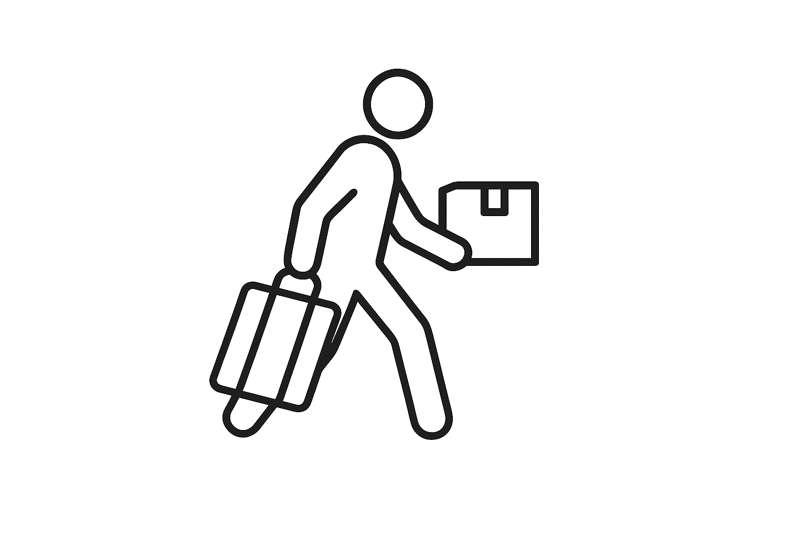

Tyozy
Your 24/7 solution for moving, furniture pickup, room cleaning, and packing & shifting in Tampere. We promise no hidden fees, honest communication, and a worry-free experience.
Moving
Professional moving service in Tampere—available 24/7, no hidden fees, free quote.

Furniture Pickup
Secure furniture pickup and delivery anywhere in Tampere, day or night.

Room Cleaning
Deep clean apartments and homes—move-in/move-out, regular upkeep, eco-friendly options.

Packing & Shifting
Expert packing supplies and shifting for all household items—stress-free relocation.